Prior unstyled PNGs in mobile/, tablet/, desktop/ are deprecated — see SCREENSHOT-CSS-INVESTIGATION.html.
| Area | Check | Result | Evidence |
|---|---|---|---|
| Encoding | No UTF-8 mojibake in wizard files | PASS | scripts/verify-phase-a4.ps1 |
| Encoding | Content-Type charset=UTF-8 | PASS | index.php header |
| Step 5 | Contact reassurance panel displays | PASS | Markup + screenshots |
| Step 6 | Payroll platform disclaimer | PASS | reg-wizard__payroll-notice |
| Step 7 | PSA upload status + camera capture | PASS | registration-wizard-psa.js |
| Step 8 | Review summary populated | PASS | registration-wizard-review.js |
| Step 8 | IBAN masking (****last4) | PASS | Unit test: IE29...5678 |
| Step 8 | PPS masking (***last2) | PASS | Unit test: 1234567AB |
| Navigation | Progress bar all steps | PASS | ARIA progressbar in shell |
| Navigation | Back / Continue | PASS | registration-wizard.js |
| Draft | Autosave + resume draft | PASS | registration-wizard-autosave.js |
| Flag | Wizard gated on flag ON | PASS | $wizardV2Enabled branches |
| Flag | Legacy form unchanged (flag OFF) | PASS | data-wizard-mode=0, hidden wizard actions |
| Production | submit.php unchanged | WARN | Uncommitted local diff (pre-existing); no A.4 edits |
| Submission | Full registration E2E | MANUAL | Requires staging test with flag ON + test email |
| Submission | Data stored correctly | MANUAL | Verify in admin staff view after E2E |
| Submission | No PHP errors on submit | MANUAL | Check server error log post-E2E |
| Submission | No JS console errors | MANUAL | DevTools on all 8 steps (flag ON) |
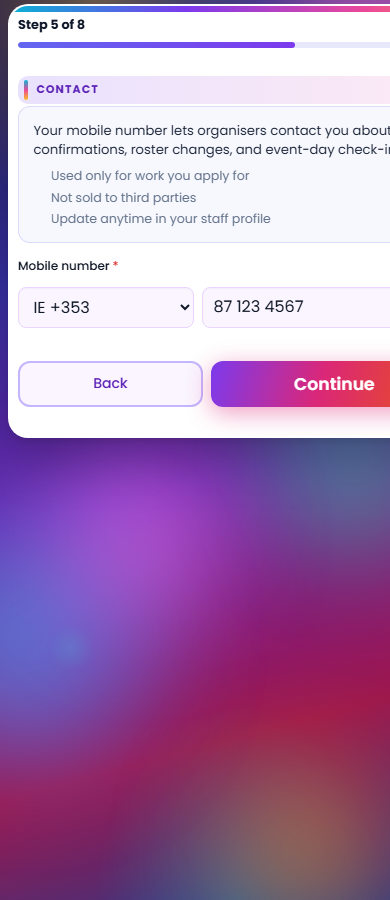
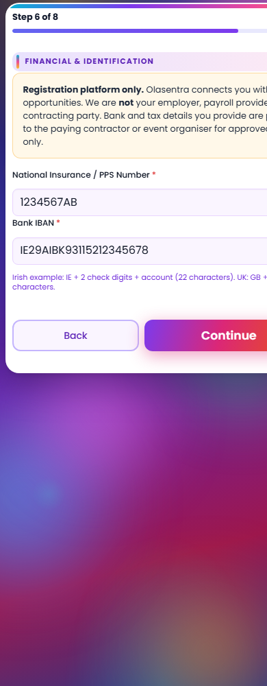
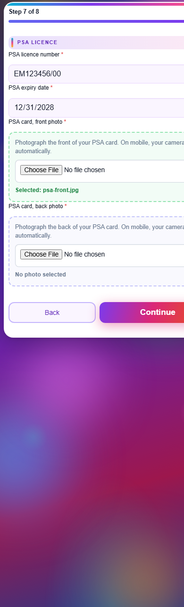
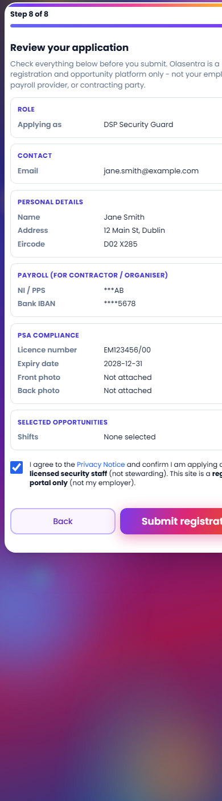
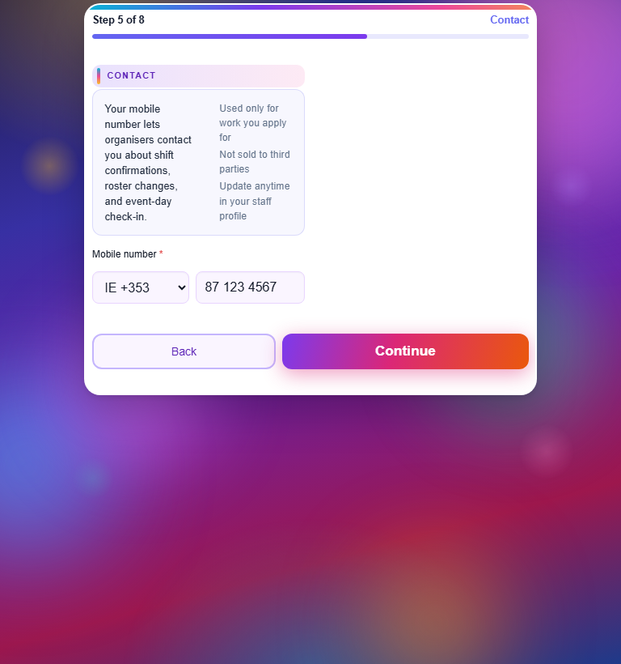
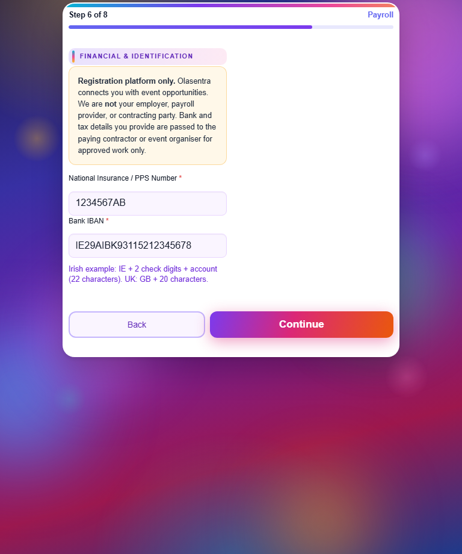
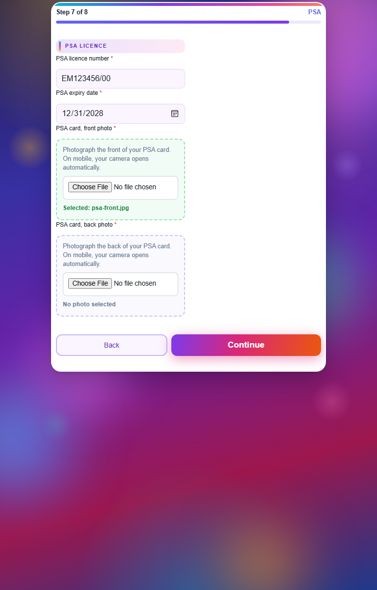
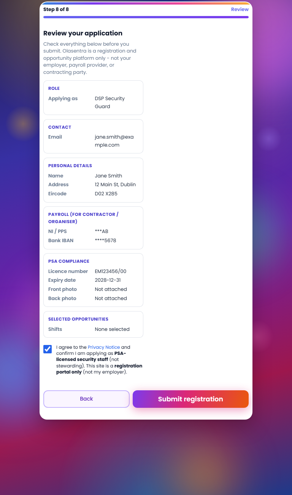
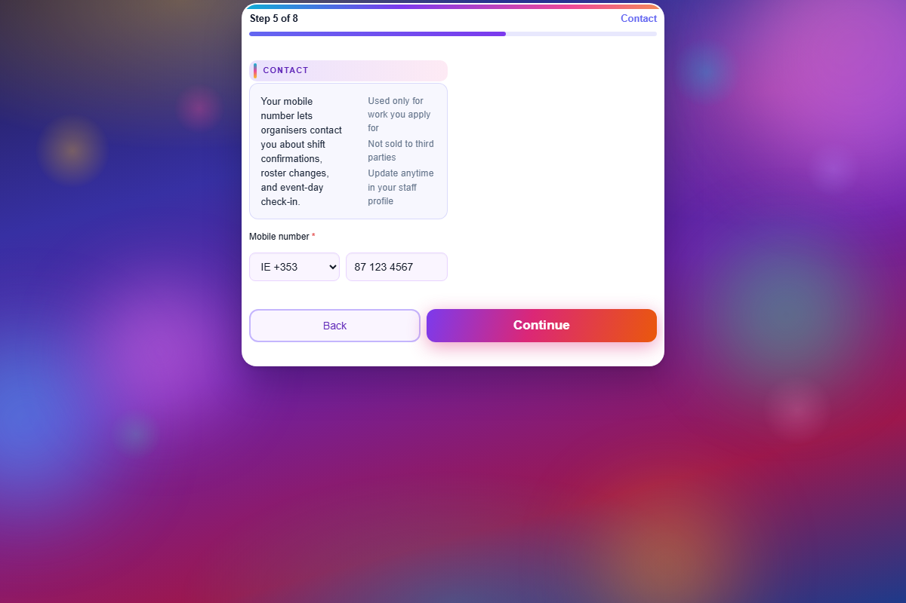
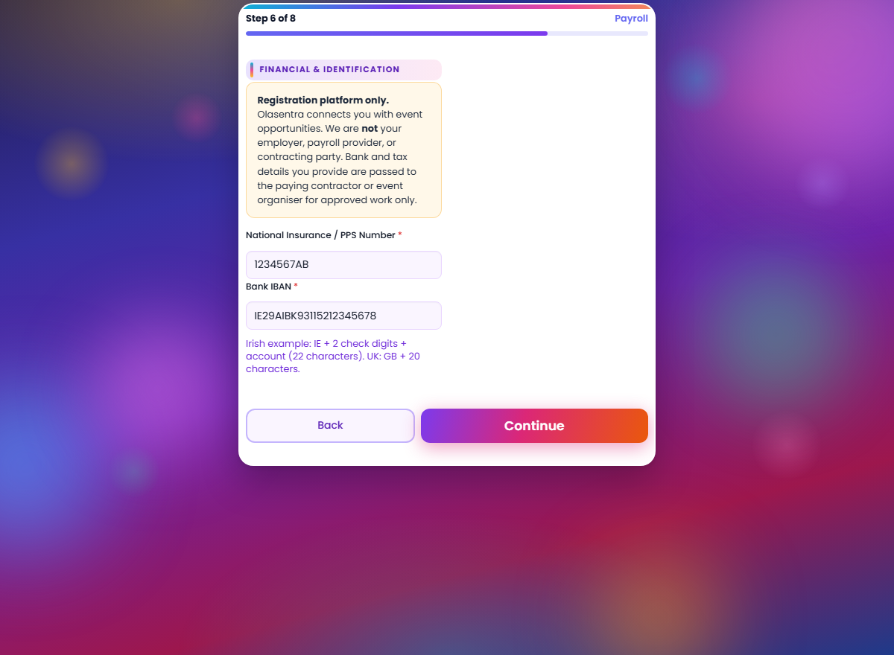
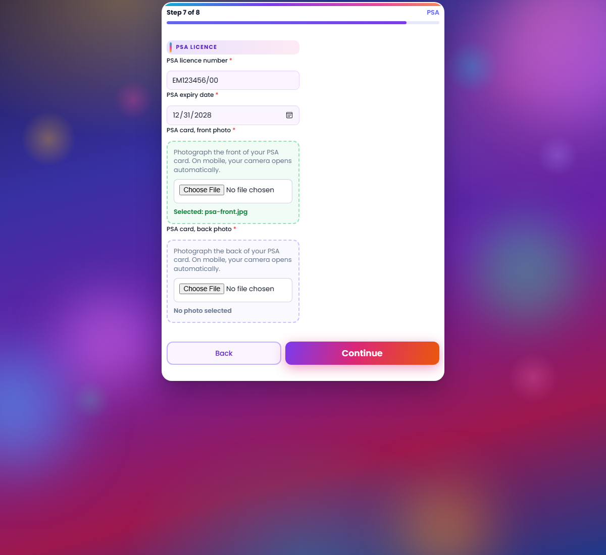
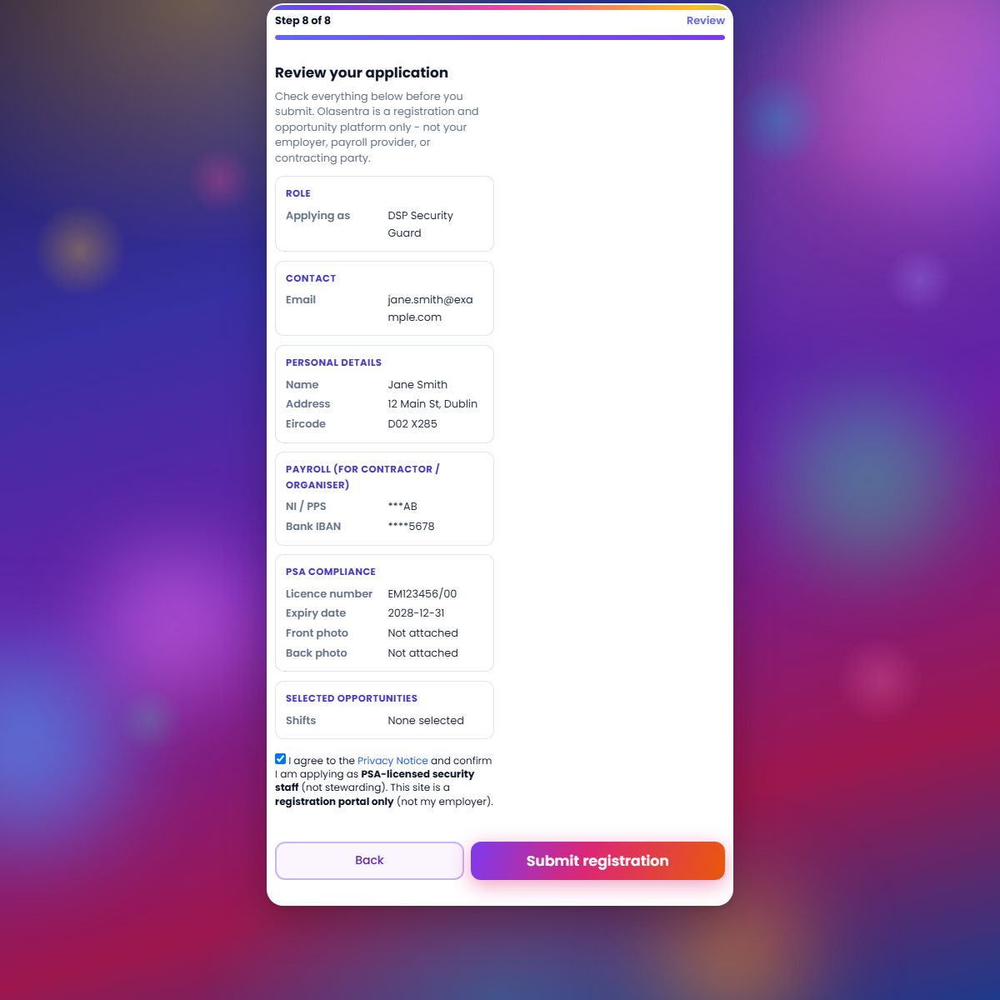
feature_registration_wizard_v2)registration-page--wizard body class applieddata-wizard-mode="1" enables wizard JS modules onlywiz_step_open/close no-ops; single-page form DOM unchangedreturning-registrant.js handles legacy prefill (not wizard returning module)End-to-end submission was not executed in this automated run (requires live DB, PSA images, and open events). Recommended staging checklist:
| ID | Severity | Issue | Target phase |
|---|---|---|---|
| D1 | Low | PSA back upload shows native file picker styling until file selected (front shows ready state in demo only) | A.5 / polish |
| D2 | Low | Review summary event names depend on shift picker DOM; empty if events not loaded before Step 8 | A.5 server-error restore |
| D3 | Info | submit.php has uncommitted local changes unrelated to A.4 - confirm before any submit-path work | Pre-A.5 hygiene |
| D4 | Info | Live E2E submission not run in this report - required before A.8 go-live | Staging QA |
Begin Phase A.5. Automated and visual verification for A.4 scope is complete. Phase A.5 should deliver:
Artifacts:
docs/screenshots/a4-verification/docs/screenshots/a4-verification/verify-results.jsonscripts/verify-phase-a4.ps1 · scripts/capture-a4-verification-screenshots.ps1docs/PHASE-A4-IMPLEMENTATION-PACKAGE.html{kind=link}
{kind=link}
{kind=link}
{kind=link}
{kind=link}
{kind=link}
{kind=link}
{kind=link}
{kind=link}
{kind=link}
{kind=link}
{kind=link}